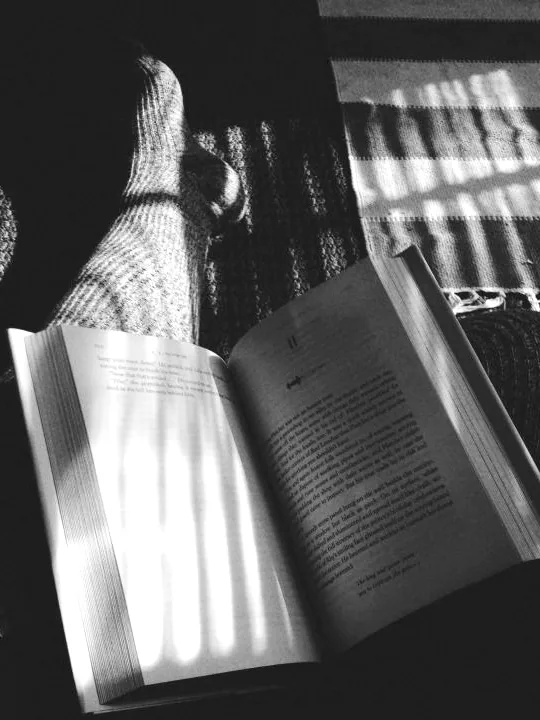
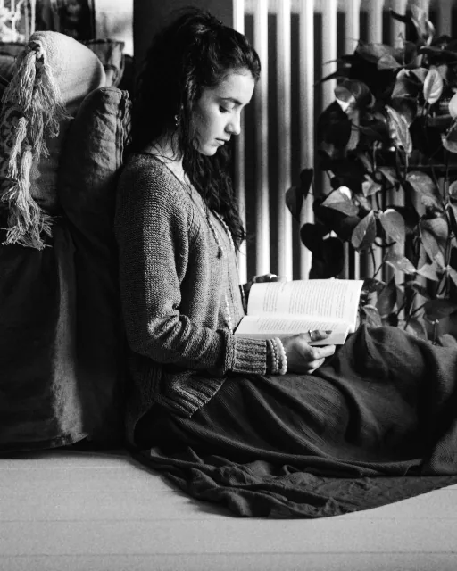

−27%
Онбординг банковского приложения
Переписала 14 экранов первого запуска. Обращений в поддержку в первый месяц стало на 27% меньше.
UX-редактор
Беру проекты с ноября.
Москва, работаю удалённо.
Кнопки, ошибки, онбординг, пуши и письма — чтобы человек понял с первого раза, а бизнесу не приходилось объяснять то же самое в поддержке.

Подход
Интерфейс не читают — его сканируют. Поэтому каждое слово на кнопке, в ошибке и подсказке работает с первого взгляда. Убираю лишнее, называю вещи своими именами и проверяю тексты на людях.
Было / стало
Ошибка 402. Транзакция отклонена эмитентом.
Банк не пропустил оплату. Проверьте лимит по карте или заплатите другой.Кто отказал и два понятных выхода — без звонка в банк.
Нет данных
Здесь появятся ваши заказы. Начните с каталога →Пустота становится первым шагом, а не тупиком.
Отправить
Записаться на 12 мартаКнопка называет результат, а не действие с формой.
Уважаемый клиент! Информируем о поступлении денежных средств
Пришло 12 400 ₽ от Анны. Уже на картеСумма и отправитель видны на заблокированном экране.
Кейсы 2021–2026
−27%
Переписала 14 экранов первого запуска. Обращений в поддержку в первый месяц стало на 27% меньше.
112→38
Свела 112 технических сообщений к 38 понятным: что случилось и что нажать.
+9%
Подсказки о размере и доставке: на 9% больше добавлений в корзину за квартал.
Названия компаний скрыты по договору — подробности расскажу на созвоне.
Услуги
Таблица правок по ключевым сценариям: что не так, как исправить, почему
5 дней
от 40 000 ₽
Тексты новых функций вместе с дизайнером, с первой итерации макета
по плану
от 3 000 ₽/экран
Принципы, словарь и примеры «можно / нельзя» для всех авторов продукта
3–4 недели
от 120 000 ₽
Практикум для дизайнеров и продактов на ваших же экранах
3 часа
от 60 000 ₽
Обо мне

Фото — заглушка до своей съёмки
Его не читают — по нему идут. Я работаю внутри команды: сижу на дизайн-ревью, смотрю записи юзабилити-тестов и пишу тексты сразу в Figma.